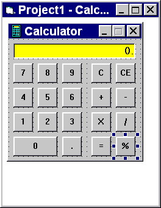
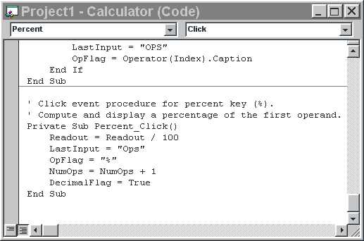

The objective of this tutorial is to become familiar with the VB environment. At the end of this tutorial you should be able to:
Microsoft have included a number of sample applications with VB. These have been provided to illustrate many of the features of the product. The forms and the code are accessible and may be used and modified. Modifying existing projects is a good way to learn.
But remember, if you alter a Microsoft project and want to keep a copy of the changed project use the Save Project As option on the File menu - this will prompt you for a new project name. Note that the Save Project option will overwrite the original Files unless they are write protected.
The sample projects are located in the subdirectory C:\PROGRAM FILES\VB\SAMPLES\. Choose ‘Open Project’ from the ‘File’ menu. Double click on the samples folder icon to inspect the contents. Double click on any project to load it.
Once an application is loaded it can be run by clicking on the  icon from the toolbar, paused using and terminated using
icon from the toolbar, paused using and terminated using  .
.
Once a project is loaded, the name of the form(s) that it contains is displayed in the project window. To view a form in design mode, select the form required by single clicking with the mouse to highlight its name, then clicking on the View Form button.
In this example, the MDINOTE.VBP project has been loaded and the FIND.FRM has been selected for viewing. This MDI example file uses three different forms and two modules.
In design mode, when a form is viewed, the code attached to any screen object may be inspected by double clicking on that object. The screen shots below show the interface of the Calculator example (“...\samples\PGuide\calc\Calc.vbp”) and the code which has been written for the ‘%’ button. To dislay the code window either double click on the relevant control on the interface (i.e. the percent key on the calculator), or alternatively select the view code icon from the project window (see above).
 Explore some of the applications provided. Alter the interface of the calculator a little by moving the controls around, changing their size and providing background colour. Observe that provided you have deleted no controls, the calculator still functions as before. The appearance of the interface is independent of the functionality.
Study the code behind the controls. A lot can be learned from observation and experimentation. Inspect the code behind the digits, it is very compact (see Control Arrays covered later). Pay attention to the colour coding (green for comments, blue for reserved words) it is a great aid to understanding. The example code in Help is invaluable, this gives both syntax and VB naming conventions.
Now it is time to design your own interface from scratch. Choose ‘New Project’ from the ‘File’ menu. Use the blank form1 to design a simple interface for a student database. Suppose that the lecturers want a simple graphical system that they can interrogate to find out the following details about students taking their course: name, address, date of birth, appearance (photo is to be stored), previous computing experience (yes or no). Create a form that has your own details on it.
VB provides an extensive icon library in C:\Program Files\DevStudio\Vb\graphics\icons\. Use any icon to represent a photo of yourself. First create a picture box on form1. Then enter code for a click event so that the icon of your choice is displayed in response to a mouse click. The syntax of the LoadPicture command is given below.
Run your application to test out the icon display code.
Experiment with your interface to make it look as professional as possible. Try creating frames to gather together related information. Add a title to the display such as “Napier University Student database” and include the University Logo.
Save your work to disk. Use the Windows Explorer or any desktop windows to check that all files have been saved. There should be one Visual Basic Project (.VBP) file and separate Form (.FRM) and Module (.BAS) files for each form and module used in the current project.
 Menu
Menu Tutorial 2 (Understanding Events)
Tutorial 2 (Understanding Events)